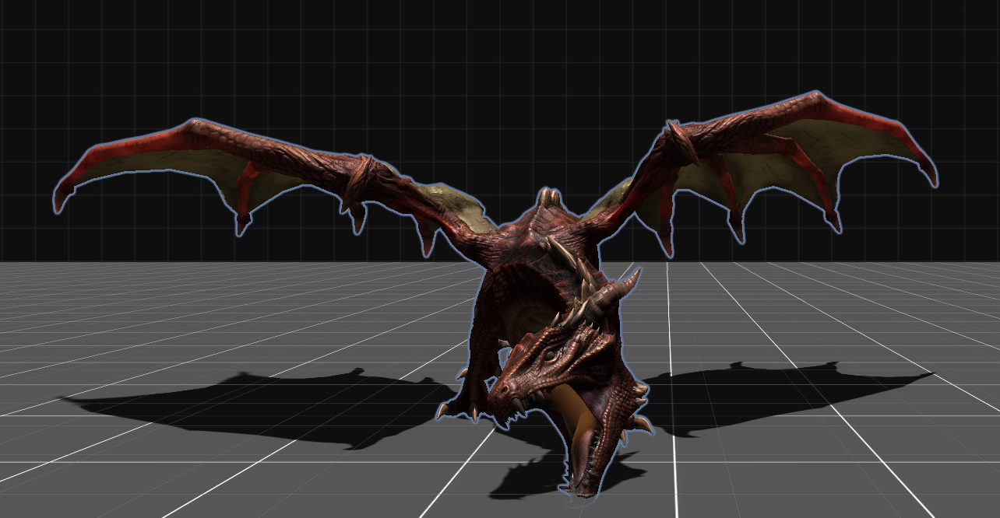

この世界は主に4つのエリアから成る。ここではそのエリアでできることについて紹介する。
エリア紹介

このエリアでは、アイテムの購入に使うゴールドや
経験値を得ることができます。
コントローラーを操作し、攻撃をうまく防ぎながら
モンスターを倒そう！
コントローラーはみなさんお馴染みの・・・？

このエリアでは1回の周回で魔法アイテムの購入、および魔法の伝承のどちらか1つを行うことができる。複数周回可のため
アイテムも魔法もどちらも取得可能だが、
1回の周回で両方同時に取得はできないので注意。
アイテムの購入では、アイテムが全部で9つあり自身の所持しているゴールドから1つ購入することができる。
魔法の伝承では、「防御魔法・攻撃魔法・究極魔法」の
3種類あり、またそれぞれに3種類あるのでそれぞれ1つずつ合計3個選ぶことができる。
魔女が数字列に変換された文を言うので、それを正しく詠唱(入力)できた回数に応じて魔法を入手できるかが決まる。
いずれもボス戦でのみ使用可能。

洞窟で手に入れたアイテムは鑑定士ルクルンの家に
行くことで鑑定してもらうことができます。
彼にQRコードを見せることでアイテムがもらえます。
指定されたQRコードと
完全に一致している場合はすごいアイテムを
にているQRコードの場合はふつうのアイテムを
異なるQRコードの場合はぼろいアイテムを
入手することができます。
稀に違いが分かりにくいQRコードが紛れています。
正解した場合はレアアイテムをもらえるかも...！？

これまで手に入れたアイテム、魔法をすべて解き放ち、
この世界に君臨するドラゴンを倒せ！
※このエリアは上記3エリアをすべて探索したのちに
解禁されます。
近畿大学情報学部祭実行委員会